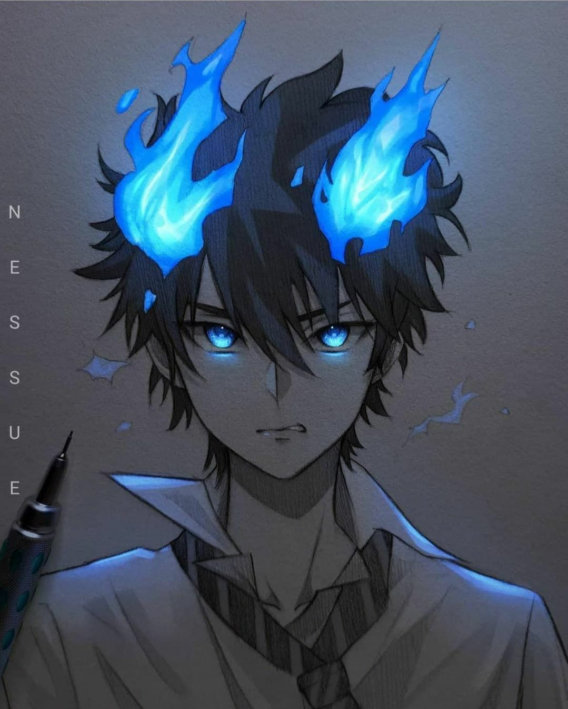

ANIME
Anime adalah animasi khas Jepang yang biasanya dicirikan melalui gambar- gambar berwarna-warni yang menampilkan tokoh-tokoh dalam berbagai macam lokasi dan cerita, yang ditujukan pada beragam jenis penonton (Aghnia, 2012). Anime dipengaruhi gaya gambar manga, komik khas Jepang.
